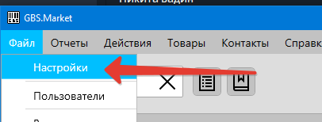
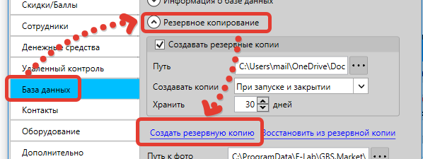
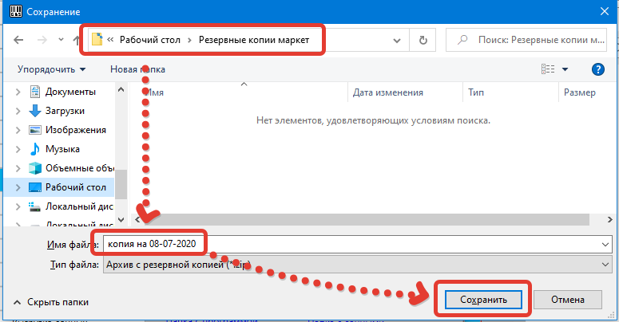
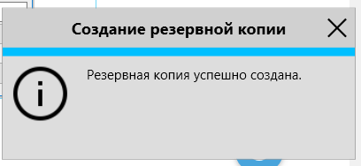
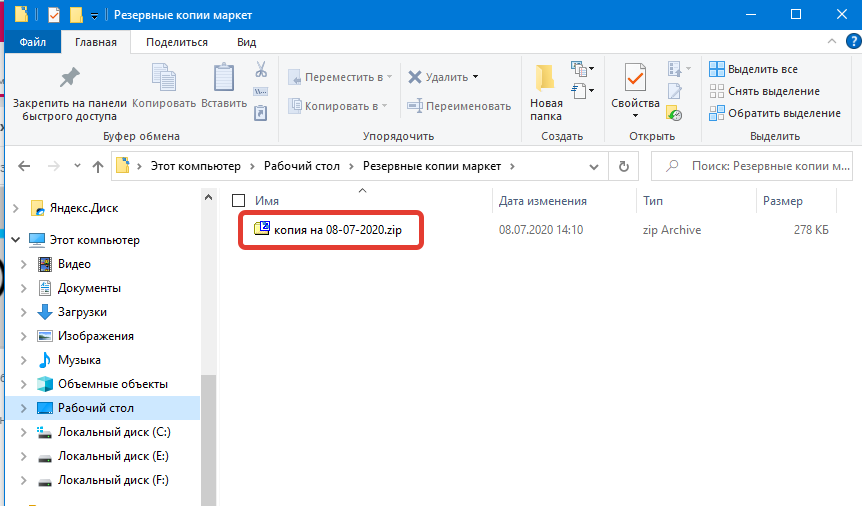

Когда пригодится
Создание резервной копии вручную позволяет сохранить данные в любой момент времени. Например, это может пригодиться в случае, когда необходимо сдать компьютер, на котором работает программа, в ремонт.
Полезное видео
Как создать резервную копию
Чтобы создать резервную копию, откройте Файл – Настройки.
В открывшемся окне перейдите на вкладку "База данных", раскройте раздел "Резервное копирование" и нажмите "Создать резервную копию"
Программа предложит выбрать местоположение файла и ввести его имя. Например, можно сохранить резервную копию на рабочий стол или на внешний USB-накопитель (флешку).
Выберите папку и введите имя файла, как на скриншоте.
После завершения операции программа сообщит о результате.
Где найти созданную копию
Найти файл с резервной копией можно в папке, которую указали в момент сохранения.
Расположение файла
Резервная копия сохраняется в указанной вами папке с выбранным именем файла. Файл имеет расширение .zip и содержит все данные программы.
Какие данные будут сохранены
В резервной копии будут сохранены:
Содержимое резервной копии
- База данных – это вся информация, которая есть в программе: товары, сотрудники, продажи, поступления и т.д.
- Настройки – все настройки программы: подключенное оборудование, выгрузка данных, резервное копирование и т.п.
- Шаблоны документов – все шаблоны печатных форм
- Шаблоны импорт из Excel – все шаблоны, созданные для импорта данных из Excel
Важно!
Фотографии товаров и категорий не будут сохранены в резервную копию. Их необходимо скопировать отдельно.
Краткая инструкция
- Откройте Файл → Настройки
- Перейдите на вкладку "База данных"
- Раскройте раздел "Резервное копирование"
- Нажмите "Создать резервную копию"
- Выберите папку для сохранения
- Введите имя файла
- Нажмите "Сохранить"
- Дождитесь завершения операции
Полезные советы
- Сохраняйте резервные копии на внешние носители (USB-флешки, внешние диски)
- Используйте понятные имена файлов с датой создания
- Создавайте резервные копии перед важными изменениями
- Регулярно создавайте резервные копии для безопасности данных
- Проверяйте, что резервная копия создалась успешно
- Храните резервные копии в безопасном месте
- Не забывайте копировать фотографии товаров отдельно
Дополнительная информация
- Резервная копия создается в формате ZIP-архива
- Размер архива зависит от объема данных в программе
- Процесс создания может занять время при большом объеме данных
- Резервная копия содержит все настройки и конфигурации
- Можно создать несколько резервных копий с разными именами
- Резервная копия позволяет восстановить программу на другом компьютере
- Фотографии товаров нужно копировать отдельно из папки программы